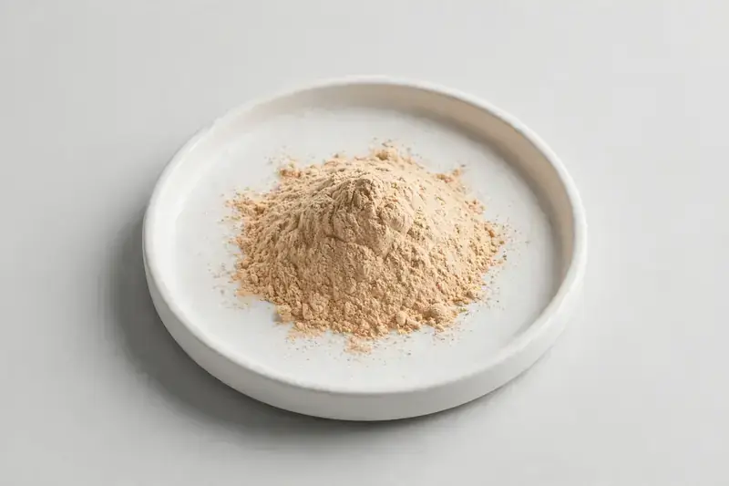

Malpighia emarginata — clean-label natural vitamin C source for food, beverage, and supplement formulations.

Overview
Acerola Extract is a fruit-derived botanical standardized to natural vitamin C, commonly requested for clean-label fortification and antioxidant positioning. It is used in supplements, beverages, gummies, and functional foods. As a Xi'an-based trading company sourcing through vetted partner producers, HerbChina Extracts helps overseas supplement, food, beverage, and cosmetics brands compare commonly requested market specifications. Buyers share their target spec and we confirm feasibility honestly before quotation.
Specifications below reflect commonly requested options in the market — not a stock list. Share your target spec and we'll confirm exactly what we can supply, honestly.
| Specification | Details |
|---|---|
| Botanical identity | Malpighia emarginata (syn. M. glabra), fruit |
| Marker compound | Natural vitamin C — commonly requested: 17–25% (titration/HPLC) |
| Appearance | Light beige to pale tan-orange fine powder |
| Mesh size | Typically 80–100 mesh (confirm per inquiry) |
| Testing | COA/TDS arranged on request; scope agreed per your spec |
Applications
Documentation
We don't claim in-house labs or certifications we don't hold. COA and TDS documents can be arranged on request, and testing scope is agreed against your specification before supply.
FAQ
Related products
Sambucus nigra
Key marker: Anthocyanins
View specs →Lepidium meyenii
Key marker: Macamides
View specs →Beta vulgaris
Key marker: Nitrates / Betaines
View specs →Aronia melanocarpa
Key marker: Anthocyanins
View specs →Aloe barbadensis miller
Key marker: Polysaccharides / 200x
View specs →Send your target spec and volumes — we'll respond with a tailored quotation.
Request a Quote